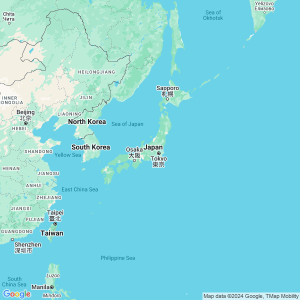

Japan
This guide is currently in development. It may contain partial or incomplete information.

Japan is an extremely safe country with amazing opportunties for bicycle touring at all levels. The locals are friendly, the roads are great, and the drivers are almost too conscientious. There are plenty of gravel and MTB trails if you want to get off the pavement. Free camping is everywhere. All of these factors make Japan a particularly good option for cyclists on their first international trips. Several bicycle tour operators are available if you don’t want to do your own logistics, but this guide aims to make self-supported touring easy. …And if things go sideways, there’s always the train.
{kind=link}
Quickstart
Highlights
Shimanami Kaido – Believe the hype. It’s an island-hopping fly-over of an inland sea – but on a bike! (Easy; 1 day minimum)
Yamanami Highway – An amazing alpine ride that takes you coast-to-coast across the width of Kyushu, from Matsumoto to Beppu or Oita, via Aso National Park. (Medium; 2 days minimum)
Aomori highlands – Lake Towada and Towada-Hachimantai National Park offer superb riding and camping as a quick stop on on a longer tour, or as part of a two-day loop starting and ending in Aormori city. Don’t miss the short-but-splendid downhill run from the eastern shore of Lake Towada through Orase Gorge-ous! (Medium; 2 days minimum)
Norikura Skyline –
Bandai-Azuma Skyline – (Difficult; 1 day min)
The Nakasendo – Completionists will get a huge kick out of pushing their bikes up steep, cobblestone horrorshows. The rest of us will enjoy varied riding along – but only occasionally on – Japan’s most famouse Edo-era trade route from Tokyo to Kyoto. (Mega; 1 week minimum; 10 days comfortable.)
Length of Japan (LoJ) – Start at Cape Sata on the southernmost tip of Kyushu and make your way to Cape Soya on the northermost tip of Hokkaido. Or vice versa. (Mega; 60 days minimum. FKT 33 days.)
Top itineraries
A day or two – Shimanami Kaido.
From a logistical standpoint, it doesn’t much matter which end of the route you choose to start at. This is such a popular objective that you’ll be able to find transportation services for yourself and your bike without trying terribly hard. Buy yourself an early start and enjoy a truly amazing ride over man-made structures that will make you feeling like you’re flying over the sea. The most stunning views are on the Imabari side.
A week – The Nakasendo.
From Tokyo:
From Kyoto:
Two weeks – Tohoku
Starting from Shirakawa in the south or Aomori in the north, string together a long wandering ride between three big volcanic lakes: Inawashiro, Tozawa, and Towada. Highlights include the Bandai-Azuma Skyline and Towada-Hachimantai National Park. The direct route between the three is lakes is moutainous With two full weeks it’s possible to squeeze in a few days on the Sanriku Fukko coast on the Pacific.
1 month –
Summer: Circuit of Hokkaido.
Summer, spring, or fall: North of Japan.
3 months – Length of Japan
Know before you go
Riding the roads – As with most Asian countries, bikes are a constant. School kids use them. Grannies use them. They’re everywhere… except actually riding in traffic! Thankfully, Japanese drivers are very careful, respectful, and well-trained.
Bike lanes – These come and go, sometimes with no warning at all. It’s almost a rule that any good bike lane in Japan won’t last for more than a couple of miles.
Bikes on public transit – Generally speaking, a bicycle is only allowed on public transit if it is completely covered by a special bag called a “rinko bag.” The only exception here is ferries, where bikes can be rolled right on right on and parked with the cars. Read more about this in the Ferries section.
You should NOT expect to take boxed bikes on public transit. Exceptions exist and are noted for cities where large boxes are acceptable trains or buses. Read more about arrival and departure strategies in the Logistics section.
- Tunnels – These are everywhere in Japan and take a bit of getting used to. Both traffic lanes will typically have a raised pedestrian walkway for emergency use, but bike lanes are seldom to be found. Furthermore, the walkways generally aren’t wide enough to safely ride a loaded bike on. The default option with tunnels is to turn on your lights and ride in the traffic lane.
Some tunnels have been deemed dangerous or impassable to bicycles. These are listed in the Appendix.
Bears, monkeys, and deer – These animals can be real hazards; take warning signs seriously. If you ride long enough in Japan, you might see a bear, you will probably see a monkey, and you will almost be killed by a deer that jumps out into the road.
Mountain weather –
Language barrier – Outside of folks in tourism, the Japanese don’t speak much English. They do, however, mostly tolerate use of Google translate by foreigners.
Routes
Length of Japan
The Nakasendo
Regions
Kyushu
{kind=link}
Highlights
Cape Sata
The Southern terminus of the Length of Japan ride is an exciting objective in its own right.
Yamanami Highway
{kind=link}
Shimoshima Island
Prefectures
Fukuoka
Kumamoto
Nagasaki
Oita
Saga
Kagoshima
Cyclists going for the full LoJ will fly either in or out at Kagoshima Airport, a 2-day ride from souther tip of Kyushu at Cape Sata.
Miyazaki
Okinawa
Shikoku
{kind=link}
Honshu
Chugoku
South and west, closest region to Kyushu.
Prefectures: Okayama, Hiroshima, Yamaguchi, Shimane, Tottori
Known for its historical sites like Hiroshima Peace Memorial Park and the floating torii gate of Itsukushima Shrine.
{kind=link}
Kansai
Central Honshu, south of Tokyo and Mount Fuji.
Prefectures: Osaka, Kyoto, Hyogo, Nara, Shiga, Wakayama, Mie
A historical and cultural heart of Japan, home to cities like Kyoto, Osaka, and Nara.
{kind=link}
Chubu
Central mountainous region extending from roughly Lake Biwa in the south through Niigata in the north, but excluding the Tokyo surroundings.
Prefectures: Niigata, Toyama, Ishikawa, Fukui, Yamanashi, Nagano, Gifu, Shizuoka, Aichi
A diverse region with the Japanese Alps, Mount Fuji, and industrial hubs like Nagoya.
{kind=link}
Kanto
Areas surrounding Tokyo.
Prefectures: Tokyo, Kanagawa, Saitama, Chiba, Ibaraki, Tochigi, Gunma
A densely populated and urbanized region on the central Pacific coast, and the economic and cultural hub.
{kind=link}
Tohoku
Everything north of Nikko.
Prefectures: Aomori, Iwate, Akita, Miyagi, Yamagata, Fukushima
Known for its rural charm, traditional festivals, and scenic landscapes, including rugged coastlines and hot springs.
{kind=link}
Hokkaido
{kind=link}
Southern
Eastern
Western
Logistics
Visas
Arrival & departure
Money
Eating
Sleeping
Bathing
Mechanicals
Budget
Hacks
FAQ
Frequently asked questions:
(Q1)
(A1)
(Q2)
(A2)
Links
Appendix
Sketchy tunnels
The following tunnels are either impassible or dangerous to cyclists.
| Name | Route | Near | Direction | Uphill | Shoulder | Construction | Catwalk | Traffic | Bypass |
|---|---|---|---|---|---|---|---|---|---|
| Gengan | 46 | Morioka | Tazawako | N | Y | Y | None | ||
| Tazawako | Morioka | Y | Y | Y | None | ||||
| Nakasendo | 19 | Kiso | Narai | N | N | N | Narrow | Heavy, trucks | Close but extreme |
| Narai | Kiso | N | N | N | Narrow | Heavy, trucks | Close but extreme |
Sketchy roads
Tour operators
Contributors
- @brianthelion – It all started in 2008 with a big overland vehicle called BiRT and a bunch of rock climbers. Then somehow bikes got involved.